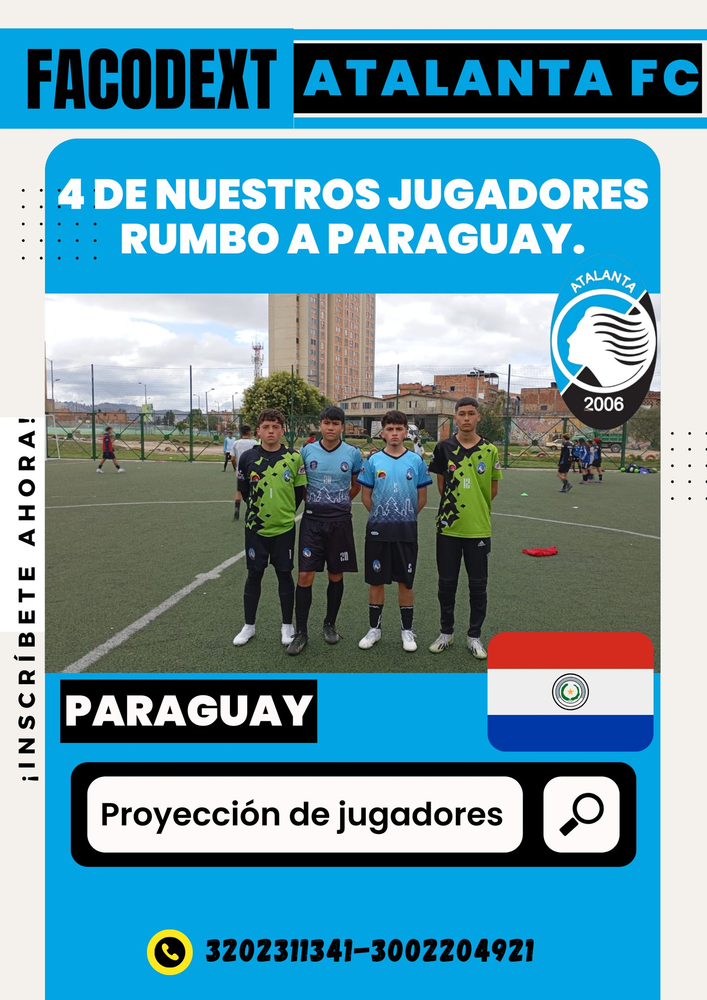
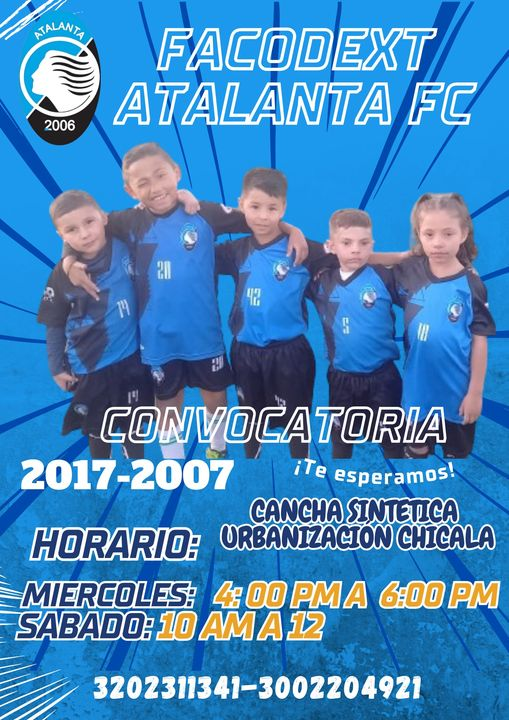
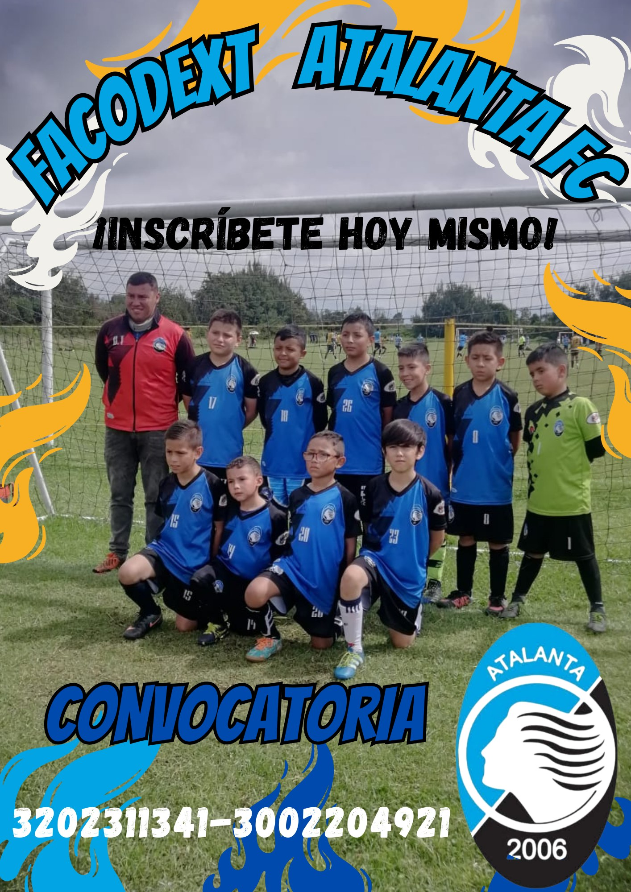

Noticias
Aquí encontrarás las últimas novedades sobre Facobext Atalanta FC, nuestros torneos y actividades destacadas.
Próximos Torneos
- Copa Regional Juvenil: Torneo de equipos sub-18. Fecha: 15 de noviembre.
- Liga Semestral: Compiten equipos de todas las edades. Fecha de inicio: enero de 2025.
- Torneo Relámpago: Modalidad rápida para equipos amateurs. Fecha: marzo de 2025.
Logros Recientes
El equipo sub-16 logró el primer lugar en el torneo regional, mostrando un gran desempeño y compromiso.
Galería del Club

Proyección de jugadores

Niños

Convocatorias
Inscripciones Abiertas
¡Únete a Facobext Atalanta FC! Las inscripciones están abiertas para todos los interesados en formar parte de nuestros equipos.